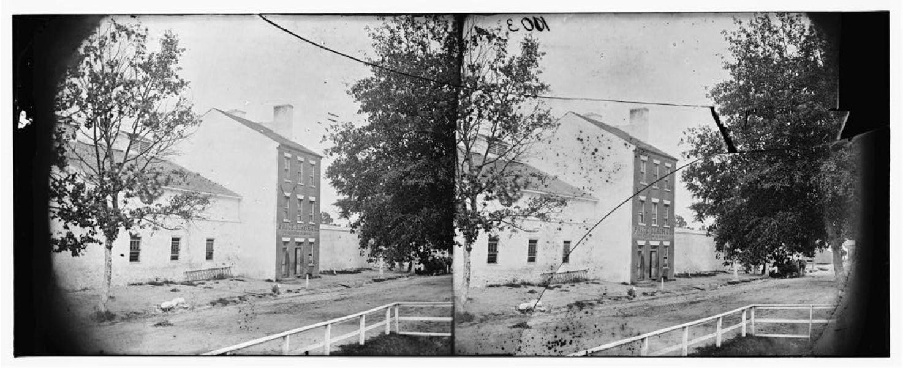

| Field | Detail |
| TOC Fit | Chapter 11 · Essay prompt 11.1 (Slavery and Capitalism); Essay prompt 11.3 (The Nature of Slavery) |
| Why Here | A wartime photograph of the brick office and walled pen of an Alexandria slave-trading firm, with the firm’s painted sign still on the building. Students can read it for how openly and permanently the interstate slave trade was housed as an ordinary business in a town just across the Potomac from the national capital. |
| Treatment | Public-domain photograph; painted sign transcribed |
From 1828 to 1836 the building at 1315 Duke Street in Alexandria was the headquarters of Franklin and Armfield, the largest slave-trading firm in the United States. The partners bought enslaved people in Virginia and Maryland, held them in the walled yard behind the office, and shipped or marched them to Natchez and New Orleans for sale. Later firms used the same property; by the late 1850s it was run by Price, Birch & Co. When Union troops occupied Alexandria in May 1861 they found the pen and freed the people held there. The army then used the building as a prison and later as a hospital for formerly enslaved people. Northern photographers recorded the sign several times, and their pictures circulated as evidence of the slave trade that the war was ending. The building survives today as the Freedom House Museum. Editorial note. The Norton Online Reader image could not be consulted for this reader, so this entry uses the best-documented public-domain photograph of the Price, Birch & Co. building, from the Library of Congress’s Civil War glass negatives (August 1863, attributed to William R. Pywell). The Library of Congress also holds a closely similar view (“Alexandria, Virginia. Slave pen. (Price, Birch & Co. dealers in slaves),” LC-DIG-cwpb-01467, https://www.loc. The sign text below follows the Library of Congress title and should be checked against the image; the Library’s title gives the old street number, 283 Duke Street. CAUTION: The photograph was taken after Union occupation, when the pen was no longer operating as a slave market. Text transcribed for this reader from the repository image; illegible words are marked [illegible]. |
|
 |
|
UNIT 3 · AN EXPANDING NATION | HISTORY B17A | DANIEL GARZA, M.A.
|